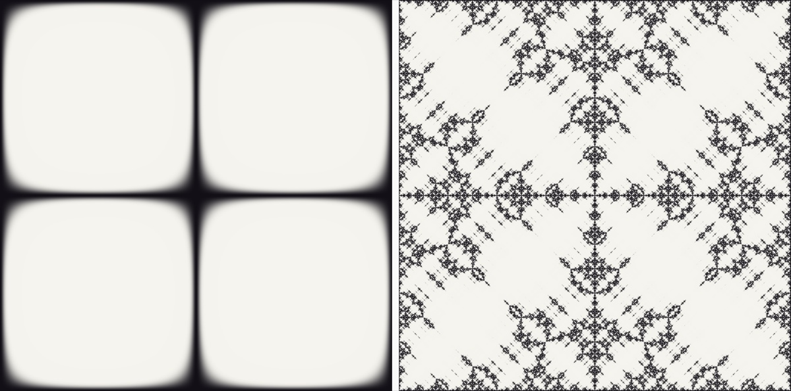
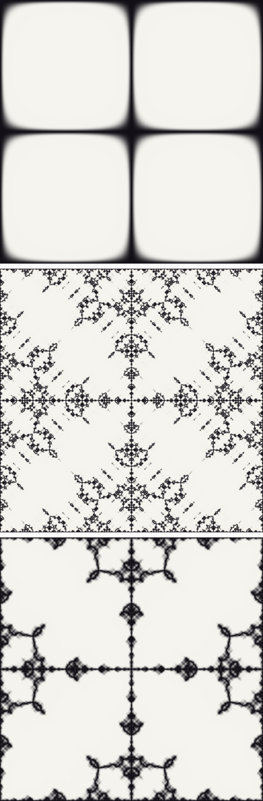

not linked from anywhere · noindex
Left: one octave — a plain Chladni mode (2,2). Smooth; its
nodal set is a curve.
Right: nine octaves of the Weierstrass cascade, a = 0.72, b = 2.
Charcoal is drawn where the plate stands still.
measured D = 1.489 · predicted 2 − H = 1.526

Top to bottom under rework: a pure tone, pink noise, brown noise. Under remove, all three would look like the top one — the plate would draw the same figure whatever you fed it.
a = b^(−β/2) · tone: no cascade · pink β=1 → a=0.707 · brown β=2 → a=0.5
